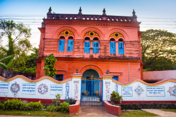

Best Of Bangladesh
Explore The Top Places Of Kushtia
Historic Kushtia house
In 1895, Rabindranath Tagore involved himself in business. With the assistance of his two nephews, Surendranath and Bolendranath, he established a joint-stock company named Tagore & Company in Shilaidaha. That same year, for better business prospects, Tagore & Company was relocated from Shilaidaha to Kushtia. To manage the company, the poet constructed a two-storied building in the Millpara area of the town.